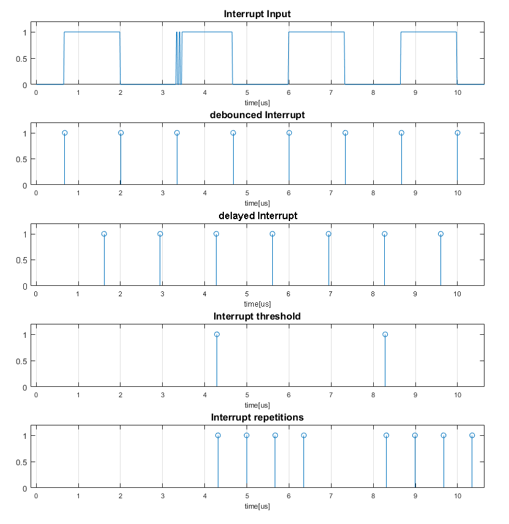
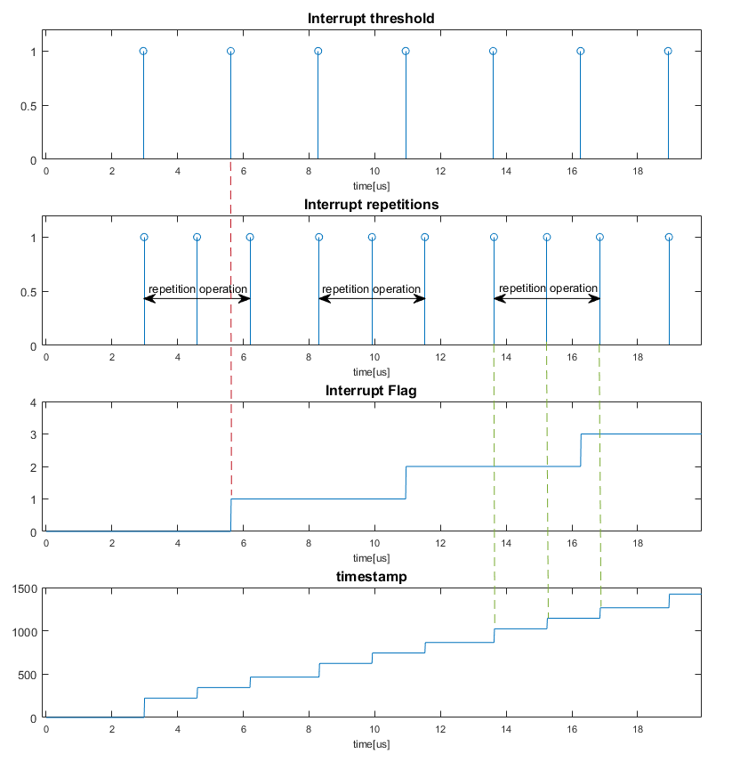
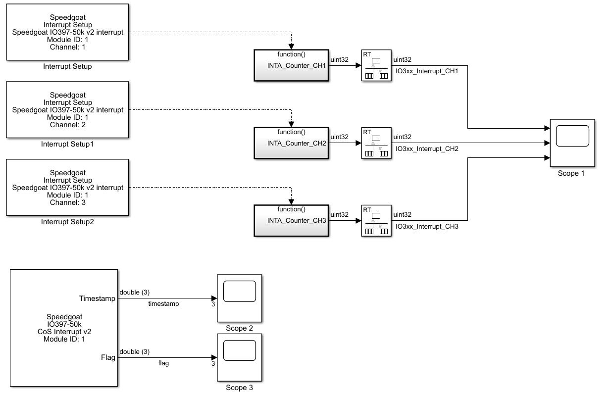

Interrupt Usage Notes
Interrupt Usage Notes — Usage information about the I/O module
Interrupt Generation Example
Let us assume we have an interrupt block with the following parameters:
| Parameter | Value |
|---|---|
| Interrupt source | "FPGA input pin" |
| Edge detection | 2 |
| Debounce duration vector | 300e-9 |
| Interrupt delay vector | 1e-6 |
| Advanced settings | enabled |
| Threshold vector | 2 |
| Repetition vector | 3 |
| Time gap vector | 0.7e-6 |

With the above settings in place, the CoS (Change of State) interrupt block detects both the rising and the falling edge of the input signal. For a time period of 300 ns, the input signal is debounced and the "bouncing" edges at the input are ignored (like the second rising edge).
Every event is delayed 1μs in relation to the input signal. With a threshold value of 2, an event is only propagated every third time. The other detected events will be ignored.
The repetition is applied after the threshold operation. In this example, every propagated event is repeated 3 times (1 event + 3 repetitions = 4 interrupts) with a time gap of 0.7 μs in between.
The lowest plot with all the repetitions represents the timing diagram of all the interrupts which trigger the Simulink model.
Flag- and Timestamp Output Examples
When enabled, the Interrupt module block provides additional information to every generated interrupt. First there is a timestamp to each interrupt and secondly there is a flag output which shows how many interrupts got lost.
The timestamp is a 64-bit counter running on the FPGA which starts to count when the model is started. Every time an interrupt triggers the Simulink model, the output is updated with the actual counter value. The green dotted lines show that the value changes at every interrupt. The timestamp units are FPGA ticks.
If the interrupt module is still performing the delay operation, new incoming events will be ignored. The same applies if the module is performing the repetition operation. The flag output value is incremented for every event missed/ignored. The red dotted line illustrates one missed event, during the repetition operation, and the incrementing value of the flag output.

Example Model
The Interrupt Setup block configures the Simulink and Simulink Real-Time software to treat a particular Function-Call Subsystem as an Interrupt Service Routine (ISR). The timestamps and flags are provided by the CoS Interrupt block. The Interrupt Setup block provides the trigger for the Function-Call Subsystem for one channel. Each interrupt channel requires an individual setup block, whereas only one CoS setup block is required to read the timestamps and flags of all the channels.
Refer to the Interrupt Setup block documentation for more information.

Latency
Depending on the settings of the CoS Interrupt block, bear in mind that the latency of the interrupt can be different. The following table shows the time needed, before the ISR is executed, depending on the enabled Outputs:
![[Note]](images/note.png)